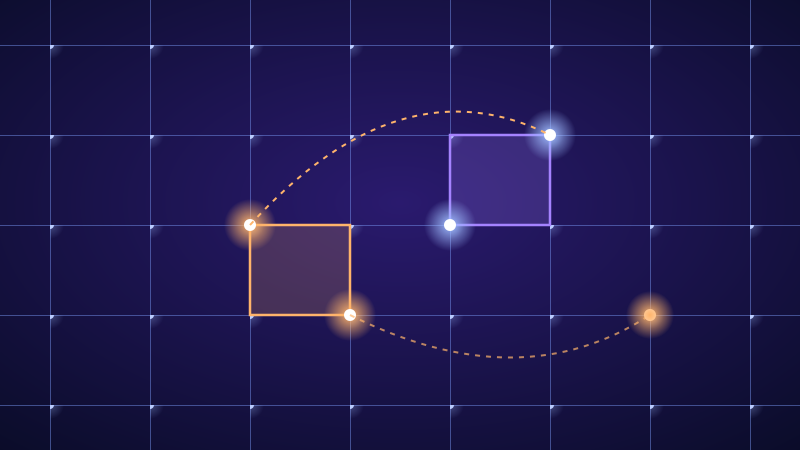
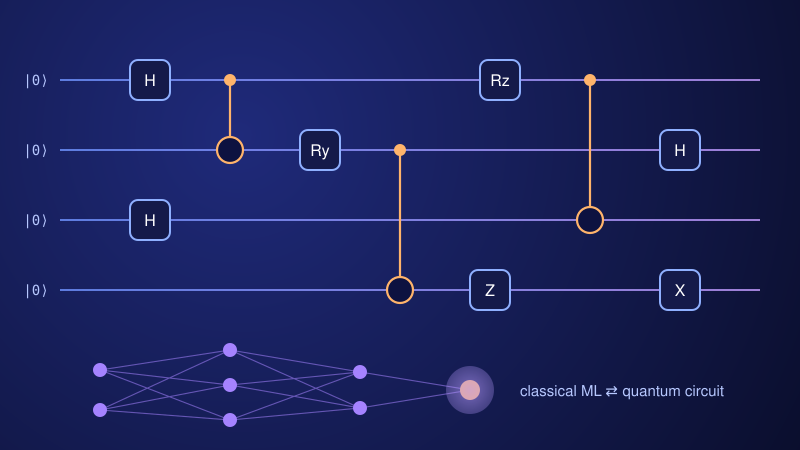
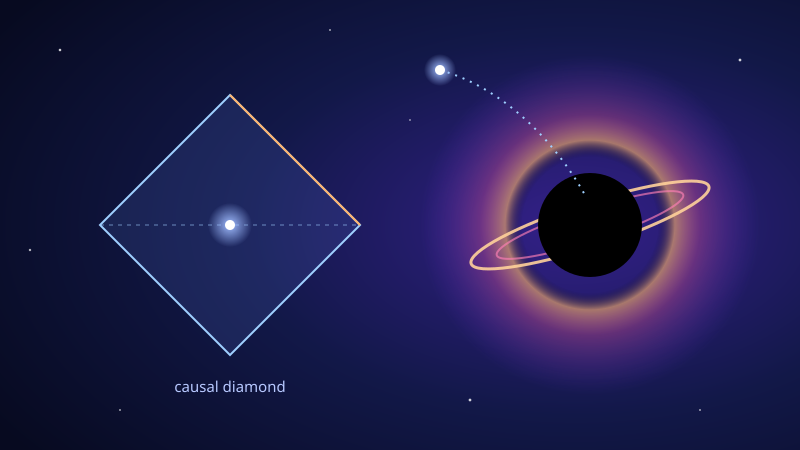

We design quantum circuits and measurement strategies to simulate strongly-interacting physical systems including lattice gauge theory, manybody physics, and quantum chemistry. The study includes both ground-state configuration and dynamics. Strategies are developed with two things in mind: how do they scale with system size and how well they perform in existing quantum hardware. We work closely with experimental teams to validate our theoretical proposals. A specific thrust area is to develop algorithms involving higher-dimensional encoding of quantum information to compress physical footprint of the hardware and entangling gate count.

Current quantum hardware limitations necessitate the development of hybrid approaches that combine the strengths of both quantum and classical computing. These algorithms leverage classical pre- and post-processing of data while utilizing quantum resources for specific tasks that benefit from entanglement and superposition. A significant thrust of our research is to develop more efficient variational algorithms and use of neural or tensor network methods to enhance the performance of quantum algorithms with applications to physics, chemistry, and sensing.

Our research explores the intersection of general relativity and quantum mechanics, focusing on phenomena such as acceleration radiation from detectors around black holes, connection between thermality, instability, and entanglement, and the role of symmetry in these systems.